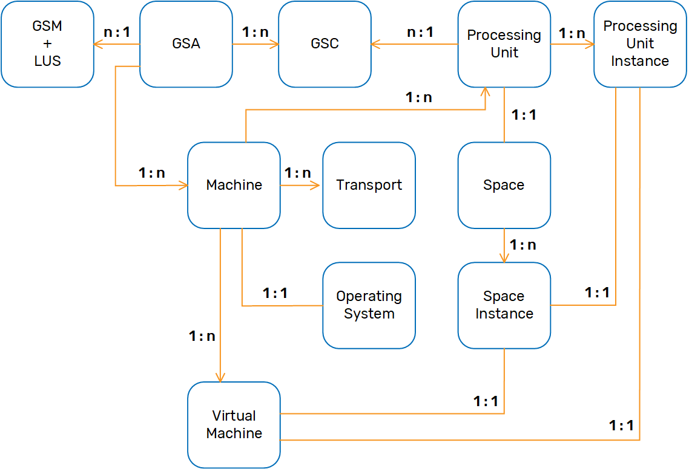

The Admin API provides a way to administer and monitor all of
Dependencies
In order to use this feature, include the
<dependency>
<groupId>com.gigaspaces</groupId>
<artifactId>xap-admin</artifactId>
<version>[%=Versions.maven-version-MX%]</version>
</dependency>
For more information on dependencies, see Maven Artifacts.
The following code examples show how the Admin API can be used to display information on the currently deployed services/components:
public void gsa() {
Admin admin = new AdminFactory().addGroup("myGroup").createAdmin();
// wait till things get discovered (you can also use specific waitFor)
for (GridServiceAgent gsa : admin.getGridServiceAgents()) {
System.out.println("GSA [" + gsa.getUid()
+ "] running on Machine ["
+ gsa.getMachine().getHostAddress());
for (AgentProcessDetails processDetails : gsa.getProcessesDetails()) {
System.out.println(" -> Process ["
+ Arrays.toString(processDetails.getCommand()) + "]");
}
}
}
public void gsm() {
Admin admin = new AdminFactory().addGroup("myGroup").createAdmin();
// wait till things get discovered (you can also use specific waitFor)
for (GridServiceManager gsm : admin.getGridServiceManagers()) {
System.out.println("GSM [" + gsm.getUid() + "] running on Machine "
+ gsm.getMachine().getHostAddress());
}
}
public void gsc() {
Admin admin = new AdminFactory().addGroup("myGroup").createAdmin();
// wait till things get discovered (you can also use specific waitFor)
for (GridServiceContainer gsc : admin.getGridServiceContainers()) {
System.out.println("GSC [" + gsc.getUid() + "] running on Machine "
+ gsc.getMachine().getHostAddress());
for (ProcessingUnitInstance puInstance : gsc
.getProcessingUnitInstances()) {
System.out.println(" -> PU [" + puInstance.getName() + "]["
+ puInstance.getInstanceId() + "]["
+ puInstance.getBackupId() + "]");
}
}
}
public void pu() {
Admin admin = new AdminFactory().addGroup("myGroup").createAdmin();
// wait till things get discovered (you can also use specific waitFor)
for (ProcessingUnit processingUnit : admin.getProcessingUnits()) {
System.out.println("Processing Unit: " + processingUnit.getName()
+ " status: " + processingUnit.getStatus());
if (processingUnit.isManaged()) {
System.out.println(" -> Managing GSM: "
+ processingUnit.getManagingGridServiceManager()
.getUid());
} else {
System.out.println(" -> Managing GSM: NA");
}
for (GridServiceManager backupGSM : processingUnit
.getBackupGridServiceManagers()) {
System.out.println(" -> Backup GSM: " + backupGSM.getUid());
}
for (ProcessingUnitInstance processingUnitInstance : processingUnit) {
System.out.println(" ["
+ processingUnitInstance.getClusterInfo()
+ "] on GSC ["
+ processingUnitInstance.getGridServiceContainer()
.getUid() + "]");
if (processingUnitInstance.isEmbeddedSpaces()) {
System.out.println(" -> Embedded Space ["
+ processingUnitInstance.getSpaceInstance()
.getUid() + "]");
}
Map<String, ServiceDetails> services = processingUnitInstance.getServiceDetailsByServiceId();
for (ServiceDetails details : services.values()) {
System.out.println(" -> Service " + details);
}
}
}
}
public void space() {
Admin admin = new AdminFactory().addGroup("myGroup").createAdmin();
for (Space space : admin.getSpaces()) {
System.out.println("Space [" + space.getUid()
+ "] numberOfInstances [" + space.getNumberOfInstances()
+ "] numberOfbackups [" + space.getNumberOfBackups() + "]");
System.out.println(" Stats: Write ["
+ space.getStatistics().getWriteCount() + "/"
+ space.getStatistics().getWritePerSecond() + "]");
for (SpaceInstance spaceInstance : space) {
System.out.println(" -> INSTANCE [" + spaceInstance.getUid()
+ "] instanceId [" + spaceInstance.getInstanceId()
+ "] backupId [" + spaceInstance.getBackupId()
+ "] Mode [" + spaceInstance.getMode() + "]");
System.out.println(" -> Host: "
+ spaceInstance.getMachine().getHostAddress());
System.out.println(" -> Stats: Write ["
+ spaceInstance.getStatistics().getWriteCount() + "/"
+ spaceInstance.getStatistics().getWritePerSecond()
+ "]");
}
for (SpacePartition spacePartition : space.getPartitions()) {
System.out.println(" -> Partition ["
+ spacePartition.getPartitionId() + "]");
for (SpaceInstance spaceInstance : spacePartition) {
System.out.println(" -> INSTANCE ["
+ spaceInstance.getUid() + "]");
}
}
}
}
public void virtualMachine() {
Admin admin = new AdminFactory().addGroup("myGroup").createAdmin();
// wait till things get discovered (you can also use specific waitFor)
System.out.println("VM TOTAL STATS: Heap Committed ["
+ admin.getVirtualMachines().getStatistics()
.getMemoryHeapCommittedInGB() + "GB]");
System.out.println("VM TOTAL STATS: GC PERC ["
+ admin.getVirtualMachines().getStatistics()
.getGcCollectionPerc()
+ "], Heap Used ["
+ admin.getVirtualMachines().getStatistics()
.getMemoryHeapUsedPerc() + "%]");
for (VirtualMachine virtualMachine : admin.getVirtualMachines()) {
System.out.println("VM [" + virtualMachine.getUid() + "] "
+ "Host [" + virtualMachine.getMachine().getHostAddress()
+ "] " + "GC Perc ["
+ virtualMachine.getStatistics().getGcCollectionPerc()
+ "], " + "Heap Usage ["
+ virtualMachine.getStatistics().getMemoryHeapUsedPerc()
+ "%]");
for (ProcessingUnitInstance processingUnitInstance : virtualMachine
.getProcessingUnitInstances()) {
System.out.println(" -> PU ["
+ processingUnitInstance.getUid() + "]");
}
for (SpaceInstance spaceInstance : virtualMachine
.getSpaceInstances()) {
System.out.println(" -> Space [" + spaceInstance.getUid()
+ "]");
}
}
}
public void machine() {
Admin admin = new AdminFactory().addGroup("myGroup").createAdmin();
// wait till things get discovered (you can also use specific waitFor)
for (Machine machine : admin.getMachines()) {
System.out.println("Machine ["
+ machine.getUid()
+ "], "
+ "TotalPhysicalMem ["
+ machine.getOperatingSystem().getDetails()
.getTotalPhysicalMemorySizeInGB()
+ "GB], "
+ "FreePhysicalMem ["
+ machine.getOperatingSystem().getStatistics()
.getFreePhysicalMemorySizeInGB() + "GB]]");
for (SpaceInstance spaceInstance : machine.getSpaceInstances()) {
System.out.println(" -> Space [" + spaceInstance.getUid()
+ "]");
}
for (ProcessingUnitInstance processingUnitInstance : machine
.getProcessingUnitInstances()) {
System.out.println(" -> PU ["
+ processingUnitInstance.getUid() + "]");
}
}
}
Obtaining information about the currently deployed services/components via the started GridServiceAgents:
public void findStartedGridServiceContainers() {
Admin admin = new AdminFactory().createAdmin();
// wait at least for one agent
admin.getGridServiceAgents().waitForAtLeastOne();
for (GridServiceAgent gsa : admin.getGridServiceAgents()) {
for (GridServiceContainer gsc : gsa.getGridServiceContainers()) {
// ....
}
}
}
public void findStartedGridServiceManagers() {
Admin admin = new AdminFactory().createAdmin();
// wait at least for one agent
admin.getGridServiceAgents().waitForAtLeastOne();
for (GridServiceAgent gsa : admin.getGridServiceAgents()) {
for (GridServiceManager gsm : gsa.getGridServiceManagers()) {
// ....
}
}
}
public void findStartedLookupServices() {
Admin admin = new AdminFactory().createAdmin();
// wait at least for one agent
admin.getGridServiceAgents().waitForAtLeastOne();
for (GridServiceAgent gsa : admin.getGridServiceAgents()) {
for (LookupService ls : gsa.getLookupServices()) {
// ....
}
}
}
public void findStartedElasticServiceManagers() {
Admin admin = new AdminFactory().createAdmin();
// wait at least for one agent
admin.getGridServiceAgents().waitForAtLeastOne();
for (GridServiceAgent gsa : admin.getGridServiceAgents()) {
for (ElasticServiceManager esm : gsa.getElasticServiceManagers()) {
// ....
}
}
}
A fully running example of a Scaling Agent is available in the Solutions & Patterns section.
The Admin API uses the AdminFactory in order to create Admin instances. After you finish working with the Admin, its Admin#close() method should be called.
The Admin API discovers all the advertised services from the Lookup Service. Use the AdminFactory#addGroup to define which lookup groups. The lookup locators can also be used for non-multicast enabled environments using AdminFactory#addLocator. If the services started are secured, the username and password can be set on the Admin API as well.
When the Admin is created, it starts to receive discovery events from all the advertised services/components within its lookup groups and lookup locators. The events occur asynchronously and the data model within the Admin API gets initialized in the background with services coming and going.
This means that just creating the Admin and calling a specific "getter" for a data structure might not return what is currently deployed, and you should wait until the structures are filled. Some components have a waitFor method that allows waiting for a specific number of services to be up. When navigating the data model, the Admin API provides its most up-to-date state of the system it is monitoring.
The Admin Domain Model has representation to all the

| Name | GridServiceAgent |
| Description | A process manager that manages Service Grid processes such as GSM, GSC and LUS. More information is available here. |
| Main Operations | Allows listing all the currently managed processes. Start processes (GSM, GSC, LUS). |
| Runtime Events |
| Name | GridServiceAgents |
| Description | Holds all the currently discovered Grid Service Agents. |
| Main Operations | Gets all the currently discovered Grid Service Agents. Wait for X number of Grid Service Agents to be up. |
| Runtime Events | Register for Grid Service Agent addition (discovery) and removal events. |
| Name | GridServiceManager |
| Description | Manages Processing Unit deployments and Grid Service Containers. More information is available here. |
| Main Operations | Deploy Processing Units. Deploy pure Space Processing Units. Get the Grid Service Agent Managing it. Restart itself (if managed by a Grid Service Agent). Kill itself (if managed by a Grid Service Agent). |
| Runtime Events |
| Name | GridServiceManagers |
| Description | Holds all the currently discovered Grid Service Managers. |
| Main Operations | Deploy Processing Units on a random Grid Service Manager. Deploy pure Space Processing Units on a random Grid Service Manager. Get all the currently discovered Grid Service Managers. Wait for X number of Grid Service Managers to be up. |
| Runtime Events | Register for Grid Service Manager addition (discovery) and removal events. |
| Name | GridServiceContainer |
| Description | Container that hosts Processing Unit instances deployed from the GSM. More information is available here. |
| Main Operations | List currently running Processing Unit instances. |
| Runtime Events | Register for Processing Unit instance additions and removal events. |
| Name | GridServiceContainers |
| Description | Holds all the currently discovered Grid Service Containers. |
| Main Operations | Get all the currently discovered Grid Service Containers. Wait for X number of Grid Service Containers to be up. |
| Runtime Events | Register for Grid Service Container addition (discovery) and removal events. |
| Name | LookupService |
| Description | A registry of services (GSM, GSC, Space instances, Processing Unit instances) that can be looked up using it. More information is available here. |
| Main Operations | Get the Lookup Groups and Locator it was started with. |
| Runtime Events |
| Name | LookupServices |
| Description | Holds all the currently discovered Lookup Services. |
| Main Operations | Get all the currently discovered Lookup Services. Wait for X number of Lookup Services to be up. |
| Runtime Events | Register for Lookup Service addition (discovery) and removal events. |
| Name | ProcessingUnit |
| Description | Deployable Processing unit running one or more Processing Unit Instances. Managed by the Grid Service Manager. |
| Main Operations | - Undeploy the Processing Unit - Increase the number of Processing Unit instances (if allowed). - Decrease the number of Processing Unit instances (if allowed). - Get the deployment status of the Processing Unit. - Get the managing Grid Service Manager. - Get the list of backup Grid Service Managers. - List all the currently running Processing Unit instances. - Wait for X number of Processing Unit instances to be up. - Get an embedded Space that the Processing Unit has. - Wait for an embedded Space to be correlated (discovered) with the Processing Unit. |
| Runtime Events | - Register for Processing Unit instance additions and removal events. - Register for Processing Unit instance provision attempts, failures, successes and pending events. - Register for Managing Grid Service Manager change events. - Register for Space correlation events. - Register for deployment status change events. - Register for backup Grid Service Manager change events. |
| Name | ProcessingUnitInstance |
| Description | Actual instance of a Processing Unit running within a Grid Service Container. |
| Main Operations | - Destroy itself (if SLA is breached, will be instantiated again). - Decrease itself (destroying itself in the process). Will not attempt to create it again. - Relocate itself to a different Grid Service Container. - List all its inner services (such as event containers). - Get the embedded Space instance running within it (if there is one). - Get the JEE container details if it is a web Processing Unit. |
| Runtime Events | Service Monitors |
| Name | ProcessingUnits |
| Description | Holds all the currently deployed Processing Units |
| Main Operations | Get all the currently deployed Processing Units. - Wait for (and return) a Processing by a specific name. |
| Runtime Events | - Register for Processing Unit deployments and undeployment events. - Register for all Processing Unit instance addition and removal events (across all Processing Units). - Register for all Processing Unit instance provision attempts, failures, success and pending events (across all Processing Units). - Register for Managing Grid Service Manager change events on all Processing Units. - Register for backup Grid Service Manager change events on all Processing Units. |
| Name | Space |
| Description | Composed of one or more Space Instances to form a Space topology (cluster). |
| Main Operations | - Get all the currently running Space Instances that are part of the Space. - Wait for X number of Space instances to be up. - Get aggregated Space statistics. - Get a clustered Space to perform Space operations. |
| Runtime Events | - Register for Space instance addition and removal events. - Register for Space instance change mode events (for all Space instances that are part of the Space). - Register for Space instance replication status change events (for all Space instances that are part of the Space). - Register for aggregated Space statistics events (if monitoring). |
| Name | SpaceInstance |
| Description | Actual instance of a Space that is part of a topology (cluster), usually running within a Processing Unit Instance. |
| Main Operations | - Get its Space mode (primary or backup). - Get its replication targets. - Get a direct Space to perform Space operations. - Get Space instance statistics. |
| Runtime Events | - Register for replication status change events. - Register for Space mode change events - Register for Space instance statistics (if monitoring). |
| Name | Spaces |
| Description | Holds all the currently running Spaces. |
| Main Operations | - Get all the currently running Spaces. - Wait for (and return) a specific Space by name. |
| Runtime Events | - Register for Space addition and removal events. - Register for Space instance addition and removal events (across all Spaces). - Register for Space instance mode change events (across all Space instances). - Register for Space instance replication change events (across all Space Instances). - Register for aggregated Space level statistics change events (across all Spaces, if monitoring). - Register for Space instance statistics change events (across all Space Instances, if monitoring). |
| Name | VirtualMachine |
| Description | A Virtual Machine (JVM) that is currently running at least one |
| Main Operations | - Get the Grid Service Agent (if it exists). - Get the Grid Service Manager (if it exists). - Get the Grid Service Container (if it exists). - Get all the Processing Unit instances that are running within the Virtual Machine. - Get all the Space instances that are running within the Virtual Machine. - Get the details of the Virtual Machine (min/max memory, etc.). - Get the statistics of the Virtual Machine (heap used), and so on). |
| Runtime Events | - Register for Processing Unit instance addition and removal events. - Register for Space instance addition and removal events. - Register for statistics change events (if monitoring). |
| Name | VirtualMachines |
| Description | Holds all the currently discovered Virtual Machines. |
| Main Operations | - Get all the currently discovered Virtual Machines. - Get aggregated Virtual Machine details. - Get aggregated Virtual Machine statistics. |
| Runtime Events | - Register for Virtual Machine addition and removal events. - Register for aggregated Virtual Machine statistics events (if monitoring). - Register for Virtual Machine level statistics change events (across all Virtual Machines, if monitoring). |
| Name | Machine |
| Description | Actual Machine (identified by its host address) running one or more |
| Main Operations | - Get all the Grid Service Agents running on the Machine. - Get all the Grid Service Containers running on the Machine. - Get all the Grid Service Managers running on the Machine. - Get all the Virtual Machines running on the Machine. - Get all the Processing Unit instances running on the Machine. - Get all the Space instances running on the Machine. - Get the operating system the Machine is running on. |
| Runtime Events | - Register for Space instance addition and removal events from the Machine. - Register for Processing Unit instance additions and removals events from the Machine. |
| Name | Machines |
| Description | Holds all the currently discovered Machines |
| Main Operations | - Get all the currently running Machines. - Wait for X number of Machines or be up. |
| Runtime Events | - Register for Machine addition and removal events. |
| Name | OperatingSystem |
| Description | The operating system that |
| Main Operations | - Get the details of the operating system. - Get the operating system statistics. |
| Runtime Events | Register for statistics change events (if monitoring). |
| Name | OperatingSystems |
| Description | Holds all the currently discovered operating systems. |
| Main Operations | - Get all the current operating systems. - Get the aggregated operating system details. - Get the aggregated operating system statistics. |
| Runtime Events | - Register for aggregated operating system statistics change events (if monitoring). - Register for operating system level statistics change events (across all operating systems, if monitoring). |
| Name | Transport |
| Description | Communication layer that each |
| Main Operations | - Get the transport details (host, port). - Get the transport statistics. |
| Runtime Events | Register for transport statistics change events (if monitoring). |
| Name | Transports |
| Description | Holds all the currently discovered transports. |
| Main Operations | - Get all the current transports. - Get the aggregated transport details. - Get the aggregated transport statistics. |
| Runtime Events | - Register for aggregated transport statistics change events (if monitoring). - Register for transport level statistics change events (across all transports, if monitoring). |
The Admin functionality is designed to interact with a service grid deployment. For StandaloneProcessingUnitContainer and IntegratedProcessingUnitContainer, components such as GridServiceAgent and GridServiceManager are not started by default, therefore portions of the Admin functionality aren't available.
There are two ways to use the Admin API to access information:
If we want to register, for example, for Grid Service Container additions, we can use the following code (removing the event listener is not shown here for clarity):
admin.getGridServiceContainers().getGridServiceContainerAdded().add(new GridServiceContainerAddedEventListener() {
public void gridServiceContainerAdded(GridServiceContainer gridServiceContainer) {
// do something here
}
});
Removals are done in similar manner:
admin.getGridServiceContainers().getGridServiceContainerRemoved().add(new GridServiceContainerRemovedEventListener() {
public void gridServiceContainerRemoved(GridServiceContainer gridServiceContainer) {
// do something here
}
});
Since both removals and additions are common events that we would like to register for at the same time, we can use:
admin.getGridServiceContainers().addLifecycleListener(new GridServiceContainerLifecycleEventListener() {
public void gridServiceContainerAdded(GridServiceContainer gridServiceContainer) {
// do something here
}
public void gridServiceContainerRemoved(GridServiceContainer gridServiceContainer) {
// do something here
}
});
All other data structures use similar APIs to register for events. Some might have specific events that go beyond additions and removals, but they still use the same model. For example, you can register for Space mode change events across all currently running Space topologies and Space instances:
admin.getSpaces().getSpaceModeChanged().add(new SpaceModeChangedEventListener() {
public void spaceModeChanged(SpaceModeChangedEvent event) {
System.out.println("Space [" + event.getSpaceInstance().getSpace().getName() + "] " +
"Instance [" + event.getSpaceInstance().getInstanceId() + "/" +
event.getSpaceInstance().getBackupId() + "] " +
"changed mode from [" + event.getPreviousMode() + "] to [" + event.getNewMode() + "]");
}
});
Of course, you can register the same listener on a specific Space topology, or event on a specific SpaceInstance.
Last, the Admin interface provides a one-stop method called addEventListener that accepts an AdminListener. Most event listeners implement this interface. You can create a class that implements several chosen listener interfaces, call the addEventListener method, and they will automatically be added to their respective components. For example, if our listener implements GridServiceContainerAddedEventListener and GridServiceManagerAddedEventListener, the listener will automatically be added to the GridServiceManagers and GridServiceContainers.
Some components in the Admin API can provide statistics. For example, a SpaceInstance can provide statistics on how many times the read API was called on it. Statistics change over time, and in order to get them either the "getter" for the Statistics can be used, or a statistics listener can be registered for statistics change events.
Details of a specific component provide information that doesn't change over time, but can be used to provide more information regarding the component, or to compute statistics. For example, the VirtualMachine provides in its details the minimum and maximum heap memory size, while the VirtualMachine statistics provide the currently used heap memory size. The detailed information is used to provide the percentage used in the Virtual Machine statistics.
The Admin API also provide aggregated details and statistics. For example, the Space provides SpaceStatistics allowing to get the aggregated statistics of all the different Space Instances that belong to it.
Each component in the Admin API that can provide statistics (either direct or aggregated) implements the StatisticsMonitor interface. The statistics monitor allows starting to monitor statistics and stop to monitor statistics. Monitoring for statistics is required if you want to register for statistics change events. The interval at which statistics are polled is controlled using the statistics interval.
The statistics interval is an important event when the Admin API isn't actively polling for statistics. Each call to a statistics "getter" only performs a remote call to the component if the last statistics fetch happened before the statistics interval. This behavior allows for users of the Admin API to not worry about "hammering" different components for statistics, because the Admin API ensures that statistics calls are cached internally for the statistics interval period.
A SpaceInstance implements the StatisticsMonitor interface. Calling startMonitor and stopMonitor on it causes monitoring of statistics to be enabled or disabled.
Space also implements the StatisticsMonitor interface. Calling startMonitor on it will cause it to start monitoring all its SpaceInstance s. If a SpaceInstance is discovered after the the call to startMonitor occurred, it starts monitoring itself automatically. This means that if a SpaceInstanceStatisticsChangedEventListener was registered on the Space, it automatically starts getting Space instance statistics change events for the newly discovered SpaceInstance.
Spaces also implements the StatisticsMonitor interface. Calling startMonitor on it will cause it to start monitoring all the Space s it has (and as a result, also SpaceInstance s, see the paragraph above). A SpaceInstanceStatisticsChangedEventListener can also be registered on the Spaces level.
The above Space level statistics behavior works in much the way with other components. For example, for VirutalMachine and VirtualMachines, Transport and Transports, OperatingSystem and OperatingSystems.
The Admin interface also implements the StatisticsMonitor interface. Calling startMonitor on it will cause all holders to start monitoring. These include Spaces, VirtualMachines, Transports, and OperatingSystems.
The Space maintains statistics information about all the data types (for example, Space class types) it stores, and the amount of Space objects stored in memory for each data type. The following example shows how to retrieve this data. This approach eliminates the need to use the GigaSpace.Count(), which is relatively expensive, with Spaces that store large number of objects.
If you are monitoring the Space class instance count with a monitoring tool, you should use the approach below rather calling the GigaSpace.Count().
public static void printAllClassInstanceCountForAllPartitions (Admin admin , String spaceName) throws Exception
{
Space space = admin.getSpaces().waitFor(spaceName, 10 , TimeUnit.SECONDS);
SpacePartition spacePartitions[] = space.getPartitions();
System.out.println(spaceName + " have " +spacePartitions.length + " Partitions , Total " + space.getTotalNumberOfInstances() + " Instances");
Arrays.sort(spacePartitions, new SpacePartitionsComperator ());
for (int i = 0; i < spacePartitions.length; i++) {
SpacePartition partition = spacePartitions [i];
while (partition.getPrimary()==null){
Thread.sleep(1000);
}
SpaceInstance primaryInstance = partition.getPrimary();
System.out.println ("Partition " + partition.getPartitionId() + " Primary:");
Map<String, Integer> classInstanceCountsPrimary = primaryInstance.getRuntimeDetails().getCountPerClassName();
Iterator<String> keys = classInstanceCountsPrimary.keySet().iterator();
while (keys.hasNext()){
String className = keys.next();
System.out.println ("Class:" + className +" Instance count:" + classInstanceCountsPrimary.get(className));
}
SpaceInstance backupInstance = partition.getBackup();
System.out.println ("Partition " + partition.getPartitionId() + " Backup:");
Map<String, Integer> classInstanceCountsBackup = backupInstance .getRuntimeDetails().getCountPerClassName();
keys = classInstanceCountsPrimary.keySet().iterator();
while (keys.hasNext()){
String className = keys.next();
System.out.println ("Class:" + className +" Instance count:" + classInstanceCountsBackup.get(className));
}
}
}
static class SpacePartitionsComperator implements Comparator<SpacePartition>{
public int compare(SpacePartition o1,SpacePartition o2) {
if (o2.getPartitionId() > o1.getPartitionId())
return 0;
else
return 1;
}
}
If you have a system that utilizes MemoryXtend, you can monitor the performance of the off-heap storage and the external disk storage. For a list of available blobstore operation statistics, see the Predefined Metrics page in the Administration guide.
The following example (relevant for the disk storage driver) demonstrates how to retrieve RocksDB statistics using the Admin API.
SpaceInstance spaceInstance =
admin.getSpaces().getSpaceByName( "MySpace" ).getInstances()[0];
SpaceInstanceStatistics statistics = spaceInstance.getStatistics();
if( statistics != null && statistics.getBlobStoreStatistics() != null ) {
BlobStoreStatistics blobStoreStatistics = statistics.getBlobStoreStatistics();
Collection<BlobStoreStorageStatistics> storageStatistics =
blobStoreStatistics.getStorageStatistics();
if( storageStatistics != null && !storageStatistics.isEmpty() ) {
BlobStoreStorageStatistics blobStoreStorageStatistics =
storageStatistics.iterator().next();
if (blobStoreStorageStatistics instanceof RocksDBBlobStoreStatistics) {
RocksDBBlobStoreStatistics rocksDBStatistics =
(RocksDBBlobStoreStatistics) blobStoreStorageStatistics;
long memtableHit = rocksDBStatistics.getMemtableHit();
long memtableMiss = rocksDBStatistics.getMemtableMiss();
long getHitL0 = rocksDBStatistics.getGetHitL0();
long getHitL1 = rocksDBStatistics.getGetHitL1();
long getHitL2AndUp = rocksDBStatistics.getHitL2AndUp();
long numberKeysWritten = rocksDBStatistics.getNumberKeysWritten();
long numberKeysRead = rocksDBStatistics.getNumberKeysRead();
long numberKeysUpdated = rocksDBStatistics.getNumberKeysUpdated();
long bytesWritten = rocksDBStatistics.getBytesWritten();
long bytesRead = rocksDBStatistics.getBytesRead();
long iterBytesRead = rocksDBStatistics.getIterBytesRead();
long numberMultigetCalls = rocksDBStatistics.getNumberMultigetCalls();
long numberMultigetKeysRead = rocksDBStatistics.getNumberMultigetKeysRead();
long numberMultigetBytesRead = rocksDBStatistics.getNumberMultigetBytesRead();
}
}
You can monitor various aspects of the mirror service using the Admin API.
The mirror statistics are available using the SpaceInstance statistics. They can be used to monitor the state of the mirror Space and whether or not it is functioning properly. These statistics are relevant only for a mirror Space instance, and are not available for ordinary Space instances. The code below traverses all the Space instances and finds the mirror Space by retrieving the mirror statistics object (if it isn't null, this means it is a mirror Space). It then prints out some of the available statistics.
for (Space space : admin.getSpaces()) {
System.out.println("Space [" + space.getUid() + "] numberOfInstances [" +
space.getNumberOfInstances() + "] numberOfbackups [" +
space.getNumberOfBackups() + "]");
for (SpaceInstance spaceInstance : space) {
System.out.println(" -> INSTANCE [" + spaceInstance.getUid() + "] instanceId [" + spaceInstance.getInstanceId() +
"] backupId [" + spaceInstance.getBackupId() + "] Mode [" + spaceInstance.getMode() + "]");
System.out.println(" -> Host: " + spaceInstance.getMachine().getHostAddress());
MirrorStatistics mirrorStat = spaceInstance.getStatistics().getMirrorStatistics();
// check if this instance is mirror
if(mirrorStat != null){
System.out.println("Mirror Stats:");
System.out.println("total operation count:" + mirrorStat.getOperationCount());
System.out.println("successful operation count:" + mirrorStat.getSuccessfulOperationCount());
System.out.println("failed operation count:" + mirrorStat.getFailedOperationCount());
}
}
}
For more information, refer to the API documentation on MirrorStatistics.
You can receive notifications about the deployment status of a Processing Unit. An event listener can be attached to the Admin API that delivers events describing the current and previous DeploymentStatus of a Processing Unit. Here is an example:
public class ProcessingUnitStatusChanged {
public void processingUnitStatusChanged() {
Admin admin = new AdminFactory().addGroup("myGroup").createAdmin();
MyProcessingUnitStatusChangedEventListener listener = new MyProcessingUnitStatusChangedEventListener();
admin.addEventListener(listener);
}
}
public class MyProcessingUnitStatusChangedEventListener implements
ProcessingUnitStatusChangedEventListener {
@Override
public void processingUnitStatusChanged(
ProcessingUnitStatusChangedEvent event) {
DeploymentStatus newStatus = event.getNewStatus();
if (newStatus.equals(DeploymentStatus.INTACT))
{
// All has settled down
}
}
}
For monitoring purposes, the Processing Unit can be queried to show its deployment status, number of actual instances vs. planned, and more details per Processing Unit instance. The planned vs. actual represents the current state, and querying this API returns an updated result each time a scheduled update is done by the underlying Admin. A plan changes on increments, decrements, restarts and relocation of instances.
ProcessingUnit processingUnit = admin.getProcessingUnits().getProcessingUnit("myProceessingUnitName");
Properties properties = new Properties();
properties.put("Name", processingUnit.getName());
properties.put("Status", processingUnit.getStatus());
properties.put("Type", processingUnit.getType());
properties.put("Actual/Planned", processingUnit.getInstances().length + "/" + processingUnit.getPlannedNumberOfInstances());
properties.put("SLA", processingUnit.getNumberOfInstances() + (processingUnit.getNumberOfBackups()>0 ? "," + processingUnit.getNumberOfBackups(): ""));
The Admin API allows you to monitor
| Service | Description |
|---|---|
| WebRequestsServiceMonitors | Statistics monitor information for JEE servlet requests. |
| RemotingServiceMonitors | Generic remoting service details. |
| EventContainerServiceMonitors | A generic event container service monitors. |
| PollingEventContainerServiceMonitors | Polling container service monitors. |
| NotifyEventContainerServiceMonitors | Notify container service monitors. |
| AsyncPollingEventContainerServiceMonitors | Async Polling container service monitors. |
Here is an example of how you can obtain this information:
public void serviceMonitors() {
Admin admin = new AdminFactory().createAdmin();
for (ProcessingUnit processingUnit : admin.getProcessingUnits()) {
for (ProcessingUnitInstance processingUnitInstance : processingUnit.getInstances()) {
ProcessingUnitInstanceStatistics processingUnitInstanceStatistics = processingUnitInstance.getStatistics();
if (processingUnitInstanceStatistics != null) {
WebRequestsServiceMonitors webRequestsServiceMonitors = processingUnitInstanceStatistics.getWebRequests();
RemotingServiceMonitors remoting = processingUnitInstanceStatistics.getRemoting();
Map<String, EventContainerServiceMonitors> eventContainers = processingUnitInstanceStatistics.getEventContainers();
Map<String, PollingEventContainerServiceMonitors> pollingEventContainers = processingUnitInstanceStatistics.getPollingEventContainers();
Map<String, NotifyEventContainerServiceMonitors> notifyEventContainers = processingUnitInstanceStatistics.getNotifyEventContainers();
Map<String, AsyncPollingEventContainerServiceMonitors> asyncPollingEventContainers = processingUnitInstanceStatistics.getAsyncPollingEventContainers();
}
}
}
}
You can also attach a ProcessingUnitInstanceStatisticsChangedEventListener to Processing Units that will fire by default every 5 seconds.
public void serviceMonitorsEventListeners() {
Admin admin = new AdminFactory().createAdmin();
admin.getProcessingUnits()
.getProcessingUnit("myProcessingUnit")
.getProcessingUnitInstanceStatisticsChanged()
.add(new ProcessingUnitInstanceStatisticsChangedEventListener() {
@Override
public void processingUnitInstanceStatisticsChanged(ProcessingUnitInstanceStatisticsChangedEvent event) {
ProcessingUnitInstanceStatistics statistics = event.getStatistics();
Map<String, EventContainerServiceMonitors> eventContainers = statistics.getEventContainers();
WebRequestsServiceMonitors webRequests = statistics.getWebRequests();
// .....
}
});
}
By default, the listener fires every 5 seconds. You can change all the intervals at once as follows. This will set the timer on the following objects: Spaces,VirtualMachines,Transports,OperatingSystems, and ProcessingUnits.
public void changeServiceMonitorsTimer() {
Admin admin = new AdminFactory().createAdmin();
admin. setStatisticsInterval(30l, TimeUnit.SECONDS);
}
You can also change the intervals individually:
Spaces.setStatisticsInterval(30l, TimeUnit.SECONDS);
VirtualMachines.setStatisticsInterval(10l, TimeUnit.MINUTES);
Transports.setStatisticsInterval(10l, TimeUnit.SECONDS);
OperatingSystems.setStatisticsInterval(3l, TimeUnit.MINUTES);
ProcessingUnits.setStatisticsInterval(30l, TimeUnit.SECONDS);